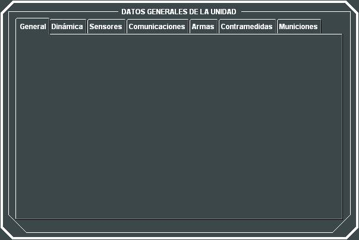
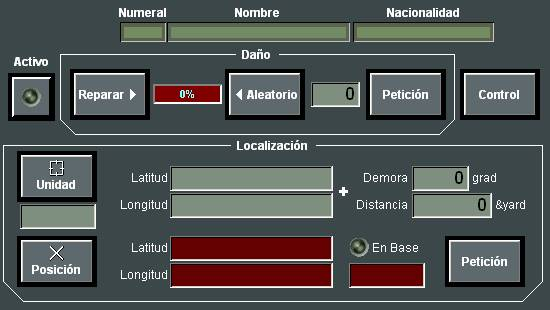
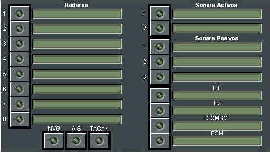
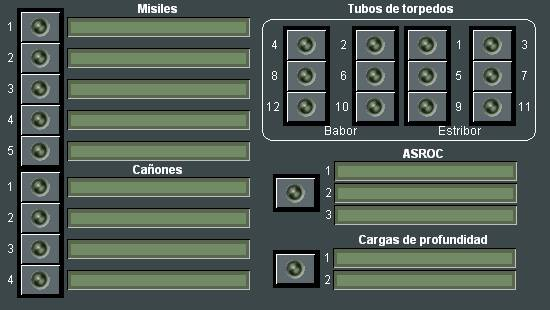
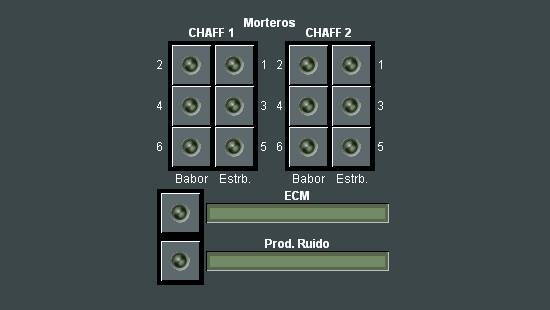
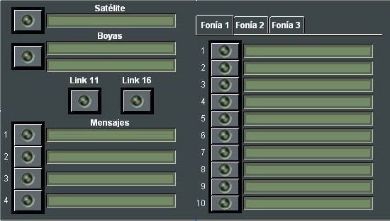
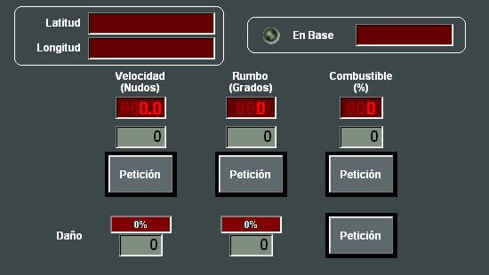
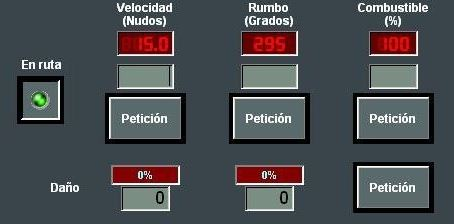
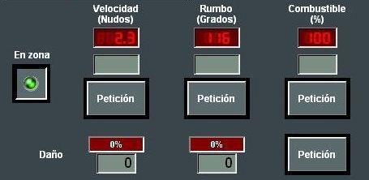
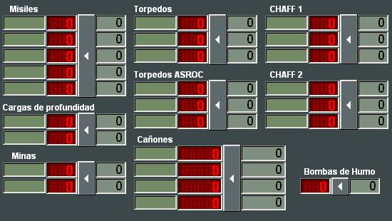

Datos Generales de Unidades
En el diálogo de Datos Generales de Unidad, se presentan distintas subventanas diferentes según el tipo de unidad, en las que el Instructor puede llevar a cabo las siguientes acciones que se describen de forma general:

Subventana General:
El Instructor puede poner la unidad como Activa / No Activa, Reparar los Daños de la unidad o establecer un daño aleatorio o cambiar la posición actual de la unidad.

Subventanas Sensores / Armas / Comunicaciones y Contramedidas:
En estas subventanas se muestra un led por cada equipo de la unidad que indica si el equipo está encendido, apagado o dañado. Actuando sobre este led, el Instructor puede dañar o reparar el equipo correspondiente.




Las pestañas Fonía 1, Fonía 2 y Fonía 3 presentan de 10 en 10 las líneas de fonía de la unidad.
Subventana Dinámica:
Desde esta ventana el instructor puede:

Cuando se muestran los datos generales de una unidad que ha sido creada como ambiental en una ruta (aerovías o rutas de tráfico mercante), la subventana Dinámica muestra un botón especial (En ruta) con el que se puede controlar la entada y salida de la unidad en la ruta correspondiente.
Cuando la unidad está en ruta el botón se muestra pulsado y con el led de color verde, en este caso cualquier modificación del rumbo y velocidad no tiene efecto ya que la unidad se mueve con los parámetros propios de su ruta.
El instructor puede sacar la unidad de la ruta soltando el botón, en este caso la unidad se mueve con los parámetros de velocidad y rumbo indicados en la ventana, y se pueden modificar como en el resto de las unidades.
En el caso de las unidades creadas en una zona de esfuerzo pesquero también aparece un botón especial (En zona) que controla la entrada y salida de la unidad en la zona correspondiente. Este botón funciona de la misma manera que el botón de las unidades en ruta (*).


(*) No incluido en todas las versiones.
Subventana Municiones:

El instructor puede consultar y reponer las municiones de cada una de las armas de la unidad.